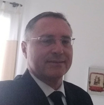

Minhas redes sociais
Quem sou eu

Sou Ivan Iglesias Ramalho e atuo nos setores de TI no desenvolvimento de aplicações e projetos de ERP
abaixo segue uma breve descrição das minhas atividados
Perfil profissional
- Carreira profissional com mais de 20 anos de experiência na área de Tecnologia da Informação,
empreendida em empresas nacionais e internacionais de segmentos diversos do setor privado,
tendo atuado também como o principal executivo pelo departamento de Tecnologia da Informação e O&M de empresa do setor público (Prefeitura do Município de Catanduva/SP),
onde foi responsável pelo planejamento e gerenciamento de serviços e projetos.
- Gerente de Projetos sendo responsável pela administração dos processos envolvidos e pela aplicação de ferramentas
e técnicas necessárias ao cumprimento das atividades do projeto conforme os processos de
gerenciamento endossados pelo PMI.
- Experiência relevante na implantação e manutenção de sistemas de gestão empresarial da TOTVS (ERP PROTHEUS).
Perfil Técnico
- >Domínio conceitual e funcional de linguagens de desenvolvimento de sistemas,
banco de dados e ferramentas, podendo destacar: Msproject, Msvisio, Oracle, ADVPL, PL/SQL.
- Integrante da equipe de certificação ISO 9001:2000 do ERP da Microsiga (atual PROTHEUS – TOTVS),
atuando como auditor para a área da Qualidade, incluindo planejamento e testes de sistemas.
- Recuperação de projetos atrasados e em crise, obtendo ótimos resultados e sucesso nas implantações.
- Experiência em gestão e desenvolvimento de projetos para CFTV, sistemas de redes wireless e cidade digital,
conhecimentos em sistemas de alarme, cabeamento estruturado e eletricidade
Como falar comigo
 Eis as minhas publicações
Eis as minhas publicações
 Minhas conecções e avaliações profisionais
Minhas conecções e avaliações profisionais
 Publicações de fotos
Publicações de fotos
 Página de empresa na WEB
Página de empresa na WEB